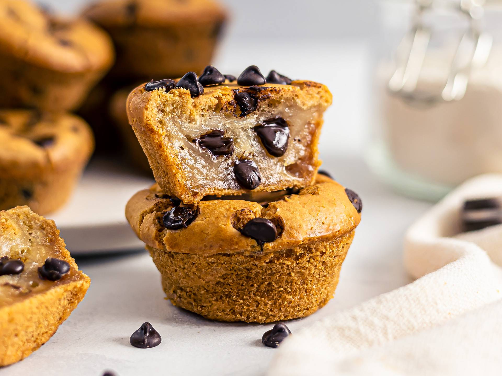

Mochi Muffins

Mochi Muffin Ingredients
These yummy mochi muffins made with rice flour and coconut milk make a
great breakfast, snack, or casual dessert.
Ready to make this mochi muffin recipe? Here’s what you’ll need:
-
Sweet rice flour: These mochi muffins start with glutinous or sweet rice
flour (such as Mochiko).
-
Sugars: A blend of brown and white sugars gives the perfect amount of
sweetness.
-
Baking powder: Baking powder acts as a leavener, which means it helps
the muffins rise.
-
Salt: A pinch of salt enhances the flavors of the other ingredients, but
it won’t make the muffins taste salty.
- Coconut milk: You’ll need a can of unsweetened coconut milk.
-
Eggs: Two whole eggs lend moisture and help bind the muffin batter
together.
-
Butter: A half a stick of melted butter adds even more moisture and
flavor.
- Vanilla: A dash of vanilla extract creates a deeper flavor.
-
Maple syrup: Add more sweetness and warm flavor with two tablespoons of
maple syrup.
- Sesame seeds: Sesame seeds take the flavor up a notch.
How to Make Mochi Muffins
You’ll find the full, step-by-step recipe below — but here’s a brief
overview of what you can expect when you make mochi muffins:
-
Whisk the dry ingredients together in one bowl and the wet ingredients
in another.
- Add the dry mixture to the wet mixture.
-
Spoon the batter into prepared muffin cups and sprinkle with sesame
seeds.
- Bake the muffins until a toothpick comes out clean.
Ingredients
- 2 cups glutinous sweet rice flour (such as Mochiko)
- 3/4 cup packed brown sugar
- 1/4 cup white sugar
- 2 teaspoons baking powder
- 1 teaspoon salt
- 1 (14-ounce) can unsweetened coconut milk
- 2 large eggs
- 1/4 cup butter, melted
- 2 teaspoons vanilla extract
- 2 teaspoons pure maple syrup
- 1 teaspoon sesame seeds
- 1 teaspoon black sesame seeds
Directions
- Step 1. Gather all ingredients.
-
Step 2. Preheat the oven to 350 degrees F (175 degrees
C). Line twelve 2 1/2-inch muffin cups with paper bake cups or grease
cups generously.
-
Step 3. Whisk together rice flour, sugars, baking
powder, and salt in a bowl.
-
Step 4. Whisk together coconut milk, eggs, butter,
vanilla, and maple syrup in a large bowl. Add flour mixture to coconut
milk mixture and stir just until combined.
-
Step 5. Divide batter between prepared muffin cups,
filling nearly full. Sprinkle with sesame seeds.
-
Step 6. Bake in preheated oven until a toothpick
inserted in the center comes out clean, 40 to 45 minutes. Cool in pan on
a wire rack 10 minutes. Remove from pan and serve warm or cool
completely.